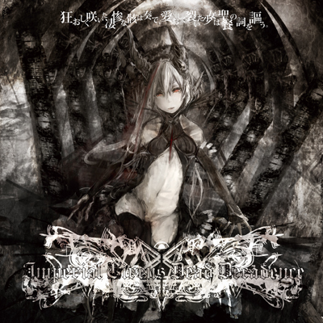

†Imperial Circus Dead Decadence†
‡M3-2011秋特設ページ‡
『狂おしく咲いた凄惨な骸は奏で、愛おしく裂いた少女は聖餐の詞を謳う。』
M3情報更新。歌詞を更新。
LIVE出演決定！(終了)
DIGITAL DOWNLOAD NOW AVAILABLE!!
ダウンロード販売中！

悶絶メタルのページ管理人・K氏によるライナーノーツ収録！！
†委託情報†
メロンブックス様
あきばお〜様
とらのあな様
メロンブックスDL様（ダウンロード販売）
VAGUEDGEにて個人通販も行っております
†Cross-Fade Sample†
†Track List†
(クリックで歌詞表示)
01.断章を紡ぐ序曲
02.劇愛の呼声が溺哀の叫声を喰らう
03.邪神の婚礼、儀は愛と知る。
04.血塗られた醜聯に耽る葬ら
05.語継がれる悲哀
06.残酷さは其の亡骸を舐らざる
07.灼熱の煉獄に薔薇は…
08.廃した少女は、這い寄る混沌と邂逅す。
09.暗黒の城郭に侵攻さる異形の狂姫
10.謳
‡Bonus Tracks‡
11.
劇愛の呼声が溺哀の叫声を喰らう -Orchestra version-(C80会場限定)
12.
紅の闇に降り注ぐ漆黒の雨 -Unplugged-
11.因果律ノ咎人、境界面上ノ運命。 (プレス版限定)
†Project Members†
‡ICDD‡
Vocal, Compose, Lyrics and Artwork: Rib:y(uhki) (L.G.C.)
Bass, Program, Arrangement, Engineering: Hull(VAGUEDGE)
‡Guitar‡
KIM(Another Stream)
‡Vocal,Voice‡
Kylie
†Guests†
‡Guitar‡
PEATH2(Electric Red) - Tr.9,10
あにょ - Tr.6,10
TOME(ANOTHER STREAM) - Tr.7,10
‡Vocal‡
KIMIKO(VorteX) - Tr.2,10
REINO(ANOTHER STREAM/Infinite Emotion) - Tr.10
Hellnear(L.G.C.) - Tr.7,10
‡Voice‡
狗吠(Chaotic Wolf)
† Banners †
http://www.lagoco.com/ICDD2/
"生きる"という戦い、惨禍の中で命を愛する心――私は"生きていく"ことを讃歌しよう――。
命を見た、其処には心がある。たとえどんな困難が待っていようとも、私はここで叫び続ける――。
デス/ブラックメタル的アグレッション、物語音楽的耽美性、妖艶たる退廃世界……
"Imperial Circus Dead Decadence"が驚異的進化を遂げ、待望の2ndアルバムをドロップ！
死を想い、生を見つめる……デカダンスメタルの極北が此処に……！
†インペリアルサーカス・デッド・デカダンス†
2007年、Rib:y(uhki)とHullを中心に福岡にて結成。ヴィジュアルロックと同人物語音楽をデス/ブラックメタル上で
昇華させるというコンセプトの元、活動を開始。その後女性ヴォーカルとしてRib:y(uhki)の旧友であったKylieが参加、
ツインヴォーカルスタイルとなる。この3人体制にて2009年に1stアルバム「惨劇の血に赫く染まった愛と絶望の黒い死とが紡ぐ最期の物語」をリリース、
その異常なまでにコアな音楽性から一部のマニアたちの間で話題となる。
その後、ギタリストとしてKIM(ANOTHER STREAM)が加入、オムニバスへの参加やシングル作品のリリースを経て
ここに待望の2ndアルバム「狂おしく咲いた凄惨な骸は奏で、愛おしく裂いた少女は聖餐の詞を謳う。」をリリース。
それはデスメタリックに啼き叫び、ブラックメタルのように狂い、悲劇の物語音楽のように哀しく、
ヴィジュアル系の如く妖しい……精神世界から宇宙的な壮大さまで幅広く表現された退廃の音世界……。
作曲能力・アレンジ技術・演奏テクニック・プロダクションといったあらゆる要素が大幅に進化し、彼らの謳う
現時点での「デカダンスメタルとは」のすべてが詰まっていると言っても過言ではない仕上がりとなっている。
また今回はギターにPEATH2(Electric Red)、あにょ、TOME(ANOTHER STREAM)、
ヴォーカルとしてKIMIKO(VorteX)、REINO(ANOTHER STREAM/Infinite Emotion)、
Hellnear(L.G.C.)、更に一部語りに狗吠(Chaotic Wolf)といった多数のゲストミュージシャンが参加している。